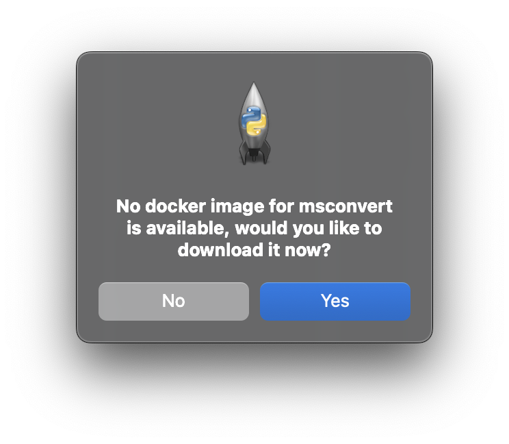
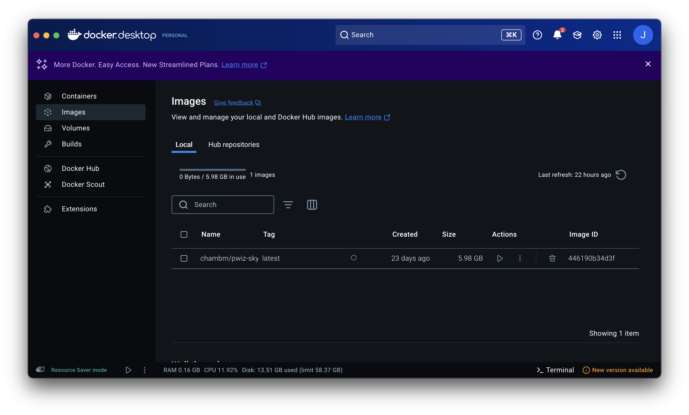

Getting Started
Installation
imzML Writer
The fastest way to get up and running with imzML Writer is via pip:
pip install imzML-Writer
MS Convert
You also need msconvert in order to run imzML Writer. imzML Writer relies on MS convert to convert raw instrument data into the open format mzML.
On PC, download the latest msconvert release from ProteoWizard and navigate through the installer. If you want to run msconvert from the command line, make sure that msconvert is added to the system PATH, either during installation or by following the instructions here.
If you only want to run msconvert using imzML_Writer, a context menu will appear the first time you start a conversion where you can search (automatically [slow] or manually) for msconvert’s install location:
{kind=link}
On Mac, download Docker and open up the GUI dashboard: The first time you go to convert raw files, it will prompt you to download the docker image for msconvert:
{kind=link}
If this fails, you can manually install the docker image by opening the Terminal app and running the command:
docker pull chambm/pwiz-skyline-i-agree-to-the-vendor-licenses
This may take a few minutes, as the image is ~5-6 GB. You can verify successful install in the Docker dashboard under the images tab:
{kind=link}
Launching the GUI
imzML Writer
Once you have both imzML Writer and msconvert (or the docker image) installed, launching the GUI is as simple as:
import imzml_writer.imzML_Writer as iw
##Launch the imzML Writer in the current directory
iw.gui()
##Launch the GUI to a specific directory
path = "/example/path/to/my/files/"
iw.gui(path)
imzML Scout
Or, if you’re only interested in viewing images you can launch scout directly on an imzML:
import imzml_writer.imzML_Scout as scout
#Direct launch and find files via GUI
scout.main()
#Open a specific image
path = "/example/path/to/my/files/image/image.imzML"
scout.main(path)
Command Line Interface
The utilities for imzML Writer are also available under imzML_Writer.utils, allowing you to build a converter from the command-line interface for your automated/bulk processing:
import os
import imzml_writer.utils as iw_utils
import time
raw_data_path = "/Users/josephmonaghan/Downloads/quick_test"
x_scan_speed = 40 # µm
y_step_size = 150 # µm
write_mode = "Centroid"
filetype = "raw"
#Convert RAW to mzML
iw_utils.RAW_to_mzML(raw_data_path)
##Waiting loop to check if msconvert has finished it's work:
all_files = os.listdir(raw_data_path)
num_raw_files = 0
for file in all_files:
if file.split(".")[-1] == filetype:
num_raw_files+=1
num_mzML = 0
while num_mzML < num_raw_files:
num_mzML = 0
all_files = os.listdir(raw_data_path)
for file in all_files:
if file.split(".")[-1] == "mzML":
num_mzML += 1
time.sleep(1)
time.sleep(5)
##Once MSconvert is done, clean up the file structure, sorting data into folders:
#Initial Raw Files - Starting files
#Output mzML Files - mzML files
iw_utils.clean_raw_files(raw_data_path,filetype)
#Write the barebones imzML and align pixels
mzML_path = os.path.join(raw_data_path,"Output mzML Files")
iw_utils.mzML_to_imzML_convert(PATH=mzML_path)
##Annotate the imzML files and place them in the original directory
iw_utils.imzML_metadata_process(
model_files=mzML_path,
x_speed=x_scan_speed,
y_step=y_step_size,
path=raw_data_path
)